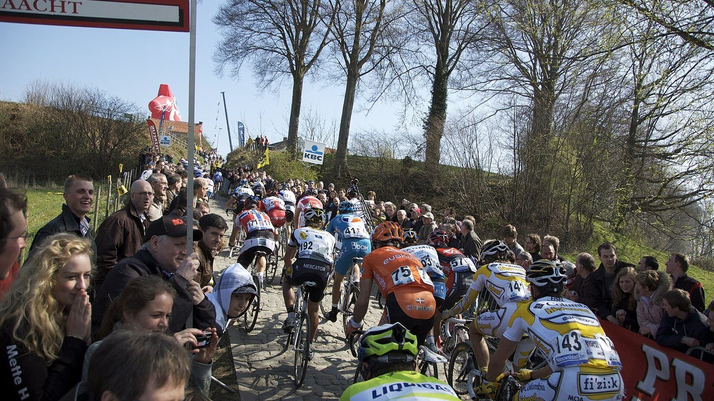

Race, Koppenberg Cobbles

Behind
Best +0:01
371W
Target 418 W-47 W
- Cadence
- 87rpm
- Heart
- 140bpm
- Speed
- 26.5km/h
Work7 of 10
0:33
Next: · 1:00 at level 11
+2.0%
57 m climbed
3.74 km
19
Resistance / 32
Solo races your best-time ghost: position reads Ahead or Behind, and solo alone gets a Pause button. Frozen at 10:27.